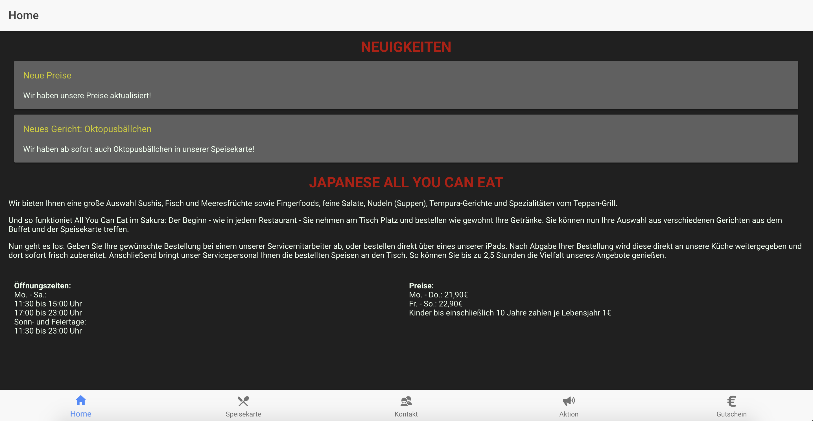
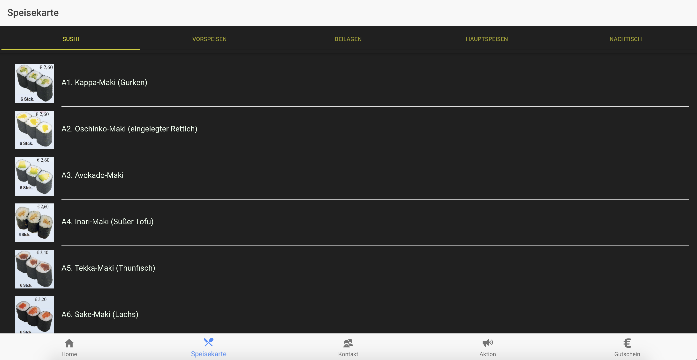
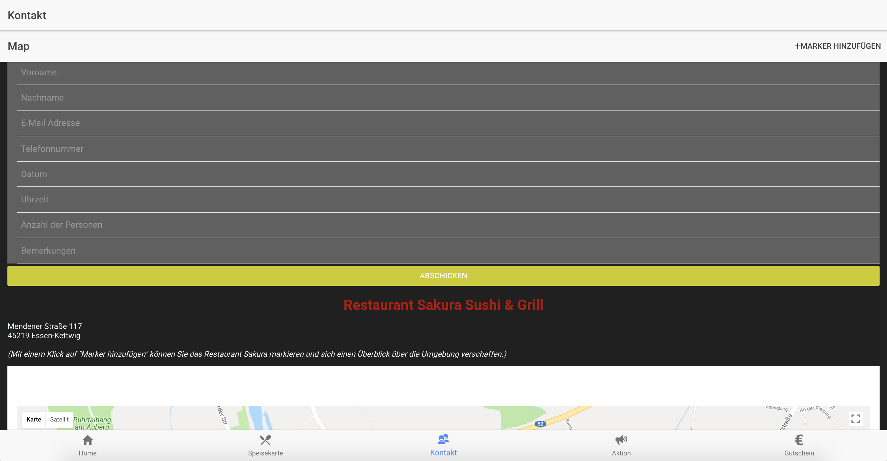
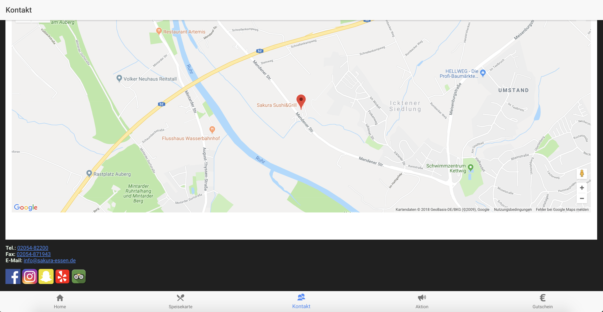
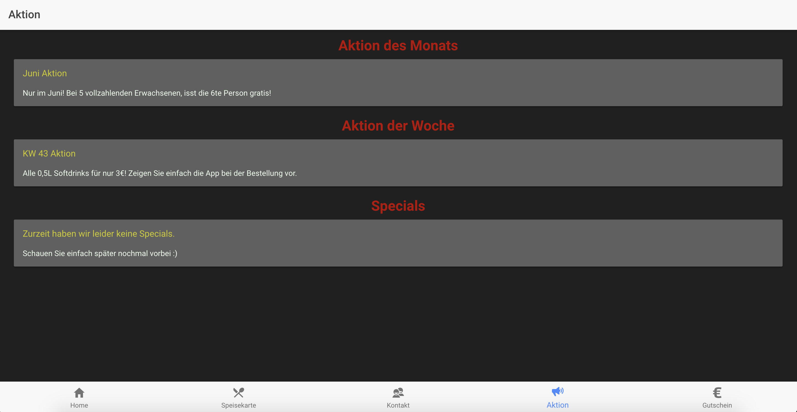
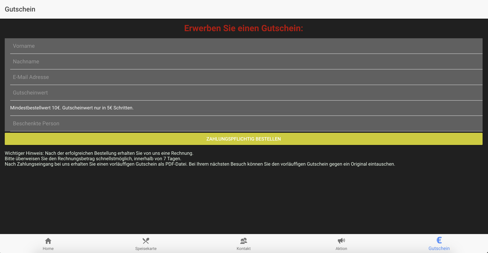

<figure></figure> <b>Japanese <font color=red>all you can eat</font></b>
<div id="left"> <figure></figure> </div> <div id="right"> <h2>Home</h2> <ul> <li>aktuelle News</li> <li>Beschreibung des Restaurants</li> <li>Öffnungszeiten</li> <li>Preise</li> </ul> </div>
<div id="left"> <figure></figure> </div> <div id="right"> <h2>Speisekarte</h2> <ul> <li>Sushi</li> <li>Vorspeisen</li> <li>Beilagen</li> <li>Hauptspeisen</li> <li>Nachtisch</li> </ul> </div>
<div id="left"> <figure></figure> <figure></figure> </div> <div id="right"> <h2>Kontakt</h2> <ul> <li>Tischreservierung</li> <li>Google Maps zur Orientierung</li> <li>Anruf tätigen</li> <li>E-Mail schreiben</li> <li>Links zu sozialen Netzwerken</li> </ul> </div>
<div id="left"> <figure></figure> </div> <div id="right"> <h2>Aktion</h2> <ul> <li>Aktion der Woche</li> <li>Aktion des Monats</li> <li>Specials</li> </ul> </div>
<div id="left"> <figure></figure> </div> <div id="right"> <h2>Gutschein</h2> <ul> <li>Gutschein erwerben</li> <li>Informationen zur verbindlichen Bestellung</li> </ul> </div>
<h2>Vielen Dank für Ihre Aufmerksamkeit!</h2> <span>Mobile II, WWI 15 SEB</span> <ul> <li>Sebastian Firlus</li> <li>Julian Hegemann</li> <li>Jonas Zasada</li> </ul> <br/><br/> <span>Bilder und die Präsentation sind unter der <a href="https://creativecommons.org/licenses/by/4.0/legalcode">Creative Commons license</a> lizensiert.</span>